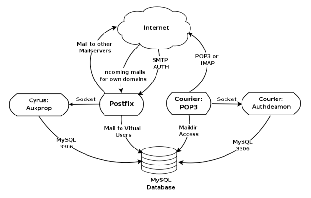

Needs Expansion: This article is incomplete, and needs to be expanded. More info... |
Abstract
There are many howtos in the Internet about setting up mail servers and various people has various choice of MTAs. Some like, Qmail, while some like Postfix or Exim. I have been using Qmail for a long time and it is an excellent MTA. The way the Qmail is licensed and distributed that there are no binary packages so that users can easily setup with their favorite distribution, and installing basic Qmail setup even is not that difficult but users need applied various patches and tweaks etc to get a complete setup done. With all these issues Qmail is the preferred choice of many geeks, since it won't give you head ache once up and running. The drawback is that this system is difficult to upgrade since users need to compile the source code and install.
The decision behind this guide is to use Postfix,an equally secure and fast MTA like Qmail, it is easy to configure and setup a Basic System in any Linux distribution. Postfix has many add-ons and support Maildir format, PostgreSQL and MySQL backend for storing and managing virtual domains very easily. This setup will be a complete virtual mail domain systems , with anti-virus and spam filtering for ISPs , hosting companies, and individual corporations who wish to use Ubuntu Linux as there preferred server platform.
System Overview
It is important to know how our system works before going to install. A virtual mail system needs to be able to handle email for numerous domains with multiple users over a variety of interfaces. When you handle multiple domains within the same mail system it presents you some management issues. We have to answer these issues using our technology. Assume ,for example you may have following questions to answer.
- What will you do if you have two users which require same username for different domains?
- If you are providing imap access and smtp-auth, how do combine the various authentication daemons into a single system?
- How do you provide security for the numerous components that comprise the system?
- What we can do, if users are asking their own spam filtering policies.
- Individual domain administrators are asking a web-based interface to manage their mail domains
- How do you setup a web-based management system for Postfix?
- Each user needs a web-base interface to change his mail account's password
- How you are going backup user account database and disaster recovery?.
- Utilizing ssl for transport layer security
- Handle mailing lists for any domain
How do you manage all these issues together?
Don't panic, I will answer all these questions one by one. Be happy and continue to read this howto.
What You Get
- Web based system administration
- Unlimited number of domains
- Virtual mail users without the need for shell accounts
- Domain specific user names
- Mailbox quotas
- Web access to email accounts
- Web base interface to change user passwords
- IMAP and POP3 support
- Auto responders
- SMTP Authentication for secure relaying
- SSL for transport layer security
- Strong SPAM filtering
- Anti-Virus filtering
- Log Analysis
Packages Required
The following packages are needed to implement our system and most of these packages are in APT repositories. In our installation section you will learn how to install and configure each.
The Big Picture
The following figure shows the big picture of our setup. If you look at it carefully the figure itself is self explanatory.

In our setup:
Postfix Mail Transfer Agent receives emails via the SMTP protocol and delivers them to different places on your hard disk.
MySQL database server stores the information to control the behavior of postfix. It knows about users, domains, email forwarding and passwords.
Courier is a standalone mail server just like Postfix but we just use its POP3/IMAP server component to let users access the mailboxes.
SASL, the Cyrus library is using to authenticate your users who are dialed in at another ISP while they are on the road they get an IP address outside of your network. Your mail server however only trusts local IP addresses. The SASL ,Simple Authentication and Security Layer, adds authentication to SMTP and makes your mail server trust them.
How Postfix Mappings Work?
It is very important to understand how Postfix mapping works. Heart of our system is Postfix mapping. Let's discuss it here. Don't skip this section.
The generic literal meaning of mapping is assign one value to another. What we have to map in Postfix is email user accounts or email address. One example is /etc/aliases, the local aliases or local system users mapping file used by Postfix. The syntax of this file is:
postmaster: root
This makes all the mails which are coming to postmaster@yourdomain.tld are redirected to root@yourdomain.tld. We can divide the above syntax to Left Hand Side LHS and Right Hand Side RHS. This RHS and LHS are common abbreviations which we usually used in mappings. The following table will make this idea even more clear.
LHS |
RHS |
postmaster: |
root |
|
Usually we do not use colon(:) in LHS for Postfix and this has been done for backward compatibility with historical reasons. The local alias file is a special file that is compiled with newaliases command but not with usual Postfix mapping command postmap |
With a basic default Postfix installation we use text file for mappings. We write the mappings into this file and then convert it into a hash file using postmap command so Postfix can look up items quickly. For example, assume that we need to map our virtual mailboxes in a file called /etc/Postfix/virtual_mailboxes. The syntax of this file look like:
info@domain1.com sigiri info@domain2.com kala
You may have noticed that we don't have colon(:) in the LHS of the mappings file
Then you need to run:
postmap /etc/postfix/virtual_mailboxes
You can access this mappings in the Postfix configuration file by including the following line:
virtual_mailbox_maps = hash:/etc/postfix/virtual_mailboxes
In our setup, we will replace this text mapping files with MySQL tables. Our intention is to make data handling lot more flexible, robust, and scalable. Since database tables can and usually contain more than just two columns you will need to tell Postfix which database column is meant to be the LHS and which is the RHS. This is accomplished by creating a configuration file which will look something like this:
user = postfix password = YJiNLQtubgnOE hosts = 127.0.0.1 dbname = postfix table = mailbox select_field = maildir where_field = username #additional_conditions = and active = '1'
For the purposes of this discussion, lets assume this is saved in a file called /etc/postfix/mysql_virtual_mailbox_maps.cf. You would then be able to use this mapping in postfix using the following entry in main.cf file.
virtual_mailbox_maps = mysql:/etc/postfix/mysql_virtual_mailbox_maps.cf
The fields in this configuration file are the user that needs to connect to the MySQL database, password of that MySQL user, dbname, the name of the MySQL database, table ,the name of the table in MySQL database and hosts, the name of the server that MySQL runs on.
Postfix uses the this configuration file as a guide on how to use the database table as a mapping similar to the mapping file with two fields described above. The LHS of the mapping is defined as where_field and the RHS is defined as select_field. In this example we will map the maildir column to the username column. Using the configuation, Postfix constructs a SQL query something like select maildir from postfix.mailbox where username='johndoe' to lookup the maildir for a given username. The following table breaks this distiction out:
LHS |
RHS |
where_field |
select_field |
username |
maildir |
How Postfix Virtual Domains Work?
Understanding how virtual domains work is very important to understand how our virtual mail setup works.
There are two types of domains in Postfix.
Local domains: All domains which are listed as mydestination are treated as local domains by Postfix. Emails for local domains are delivered to system users which are listed in /etc/passwd file and these mails are spooled in /var/mail directory.
Virtual domains: In addition to the local domains Postfix can deliver mails for virtual domains. Unlike local domains, Postfix will let us handle virtual domains in a very flexible manner. The good thing with virtual domains is that we do not need system account in /etc/passwd for each and every mail account. This provides us a way to handle thousands of mail accounts very easily in our mail server system. The mapping which we discussed above is used to handle mail account information. You can use MySQL, PostgreSQL , or LDAP for the user account management. In our setup we use MySQL backend to manage user accounts of virtual domains. Postfix handles virtual domains as two different categories and you need to understand how this works.
Virtual alias domains: These domains are used to forward or alias mails from one email address to another email address. Such domains can be used receive mailboxes and store on your hard disk. You do not necessarily need to use virtual alias domains in your setup. Instead we can user virtual_alias_maps even if the domains are not listed as virtual alias domains. The virtual_alias_maps is a general-purpose redirection mapping that works for everything that passes your system including local domains.
Virtual mailbox domains: Postfix uses these domains to receive mails for users under the domains and store them in the mailboxes on the hard disk. This is parameter which will simply tell Postfix to receive the mails on behalf of the domain and store them in each user's mailbox. The virtual_mailbox_maps mapping is used by Postfix to determine the location of the mailbox on your hard disk. Please remember that you can still use the virtual_alias_maps mapping to forward email to other mailboxes or external email addresses so not every user on that domain must actually have a mailbox but can also just have the email forwarded somewhere else.
|
It is important to understand that a domain is either a virtual alias domain or a virtual mailbox domain or a local domain. If you make a domain a virtual alias domain you will not be able to receive email for that domain on your server. On the contrary you can use the virtual_alias_maps to forward/alias email for both types of domain. So the virtual mailbox domains are generally the more flexible to use. |
|
A domain can either be virtual or local and you can not use one domain in the both of these roles. Please never both. So if you decide you want your default domain be a virtual domain then remove it from the mydestination definition. Just leave it blank or set it to mydestination=localhost. Email addresses like root@localhost would then be delivered to the local root user. |
Installing a Ubuntu Server System
In this howto I assume that you already know how to setup a Ubuntu server system. I would suggest you to do a Ubuntu server installation without a GUI. If you want to know more about installation look here
DNS Setup
This how to assumes that you already have at least one valid registered domain with an MX record setup for that domain. Setting up a BIND DNS server can be learned here
Package Installation and Configuration
You will to have install and configure all packages which I have mentioned in the "Package Required" section. Let's deal with one by one.
Postfix Base Server Installation
Here we install Postfix and other packages which Postfix requires connect with a MySQL backend.
Installing Postfix
When you install Postfix I would suggest to select "Internet Site" option.
To install Postfix, you need to install the postfix package. For Postfix documentation, you need the postfix-doc package.
Installing MySQL map support for Postfix
We need to add MySQL mapping support for Postfix. Hope that you have already read How Postfix Mappings Work? section in this how to.
To install postfix-mysql, install the postfix-mysql package.
To install MySQL client program, install the mysql-client package.
To install MySQL server, install the mysql-server package.
Installing Packages for Client Access and Authentication
We will need to offer our user IMAP/POP3 access. Our setup will offer those using the following packages.
To provide client authentication, install the courier-authdaemon package.
To add MySQL support for courier-authdaemon, install the courier-authmysql package. On Ubuntu 7.10, courier-authmysql seems deprecated, install courier-authlib-mysql instead.
To provide unencrypted POP3 access, install the courier-pop package.
To provide SSL-encrypted POP3 access, install the courier-pop-ssl package.
To provide unencrypted IMAP access, install the courier-imap package.
To provide SSL-encrypted IMAP access , install the courier-imap-ssl package.
Installing package for SMTP authentication
Our system will allow road-warriors to send email through our server using authenticated SMTP. This will basically stop unauthorized relaying through our mail server. Not only we are authenticating our user's when they are retrieving mails but also we authenticate them when they are sending mails as well.
To provide encrypted authenticated SMTP, install the postfix-tls package.
This may have already installed with postfix. If so,leave it.
To install Cyrus SASL library, install the libsasl2 package.
To add authentication mechanisms for the SASL library, install the libsasl2-modules package.
To add MySQL support authentication mechanisms with the SASL library, install the libsasl2-modules-sql package.
To create certificates, install the openssl package.
Setting MySQL Backend
Now that we have installed packages required to prepare a MySQL backend for Postfix. In this section we will configure MySQL database for Postfix.
Setting MySQL root Password
Please note that MySQL root is different from Linux root account. It is the account which which users can use to get administrative previlege with MySQL database sever. Initial installation of MySQL has no password fro root account. If you have not setup a password for MySQL root yet, this is the time for you to do so. There are few ways to do the same and I will present two of them here. Please user either one of them.
To set MySQL root in the command prompt:
$ sudo mysqladmin -u root password rootpassword
or you can use the following steps to do the same
$ mysql -u root
Then in the mysql prompt type:
mysql> SET PASSWORD FOR 'root'@'localhost' = PASSWORD('rootpassword');Don't forget set a good password rootpassword
Setting MySQL Database for Impatient Users
The schema is based on the postfixadmin MySQL schema. If you are impatient you can directly create the tables using following steps.
$ editor postfixadmin-mysql.sql
Then copy and paste the following script to the above file and save it. Replace postfixpassword on the INSERT INTO user line with a password of your choosing for the postfix user. Do the same for the postfixadmin password.
To create the database, type in a terminal.
$ mysql -u root -p < postfixadmin-mysql.sql
#------------------------------------Start copy------------------------------------- # # Postfix Admin # by Mischa Peters <mischa at high5 dot net> # Copyright (c) 2002 - 2005 High5! # License Info: http://www.postfixadmin.com/?file=LICENSE.TXT # # This is the complete MySQL database structure for Postfix Admin. # If you are installing from scratch you can use this file otherwise you # need to use the TABLE_CHANGES.TXT or TABLE_BACKUP_MX.TXT that comes with Postfix Admin. # # There are 2 entries for a database user in the file. # One you can use for Postfix and one for Postfix Admin. # # If you run this file twice (2x) you will get an error on the user creation in MySQL. # To go around this you can either comment the lines below "USE MySQL" until "USE postfix". # Or you can remove the users from the database and run it again. # # You can create the database from the shell with: # # mysql -u root [-p] < DATABASE_MYSQL.TXT # # Postfix / MySQL # CREATE DATABASE postfix; GRANT SELECT ON postfix.* TO postfix@localhost IDENTIFIED BY 'postfixpassword'; GRANT SELECT, INSERT, DELETE, UPDATE ON postfix.* TO postfixadmin@localhost IDENTIFIED BY 'postfixadmin'; USE postfix; # # Table structure for table admin # CREATE TABLE admin ( username varchar(255) NOT NULL default '', password varchar(255) NOT NULL default '', created datetime NOT NULL default '0000-00-00 00:00:00', modified datetime NOT NULL default '0000-00-00 00:00:00', active tinyint(1) NOT NULL default '1', PRIMARY KEY (username), KEY username (username) ) COMMENT='Postfix Admin - Virtual Admins'; # # Table structure for table alias # CREATE TABLE alias ( address varchar(255) NOT NULL default '', goto text NOT NULL, domain varchar(255) NOT NULL default '', created datetime NOT NULL default '0000-00-00 00:00:00', modified datetime NOT NULL default '0000-00-00 00:00:00', active tinyint(1) NOT NULL default '1', PRIMARY KEY (address), KEY address (address) ) COMMENT='Postfix Admin - Virtual Aliases'; # # Table structure for table domain # CREATE TABLE domain ( domain varchar(255) NOT NULL default '', description varchar(255) NOT NULL default '', aliases int(10) NOT NULL default '0', mailboxes int(10) NOT NULL default '0', maxquota int(10) NOT NULL default '0', transport varchar(255) default NULL, backupmx tinyint(1) NOT NULL default '0', created datetime NOT NULL default '0000-00-00 00:00:00', modified datetime NOT NULL default '0000-00-00 00:00:00', active tinyint(1) NOT NULL default '1', PRIMARY KEY (domain), KEY domain (domain) ) COMMENT='Postfix Admin - Virtual Domains'; # # Table structure for table domain_admins # CREATE TABLE domain_admins ( username varchar(255) NOT NULL default '', domain varchar(255) NOT NULL default '', created datetime NOT NULL default '0000-00-00 00:00:00', active tinyint(1) NOT NULL default '1', KEY username (username) ) COMMENT='Postfix Admin - Domain Admins'; # # Table structure for table log # CREATE TABLE log ( timestamp datetime NOT NULL default '0000-00-00 00:00:00', username varchar(255) NOT NULL default '', domain varchar(255) NOT NULL default '', action varchar(255) NOT NULL default '', data varchar(255) NOT NULL default '', KEY timestamp (timestamp) ) COMMENT='Postfix Admin - Log'; # # Table structure for table mailbox # CREATE TABLE mailbox ( username varchar(255) NOT NULL default '', password varchar(255) NOT NULL default '', name varchar(255) NOT NULL default '', maildir varchar(255) NOT NULL default '', quota int(10) NOT NULL default '0', domain varchar(255) NOT NULL default '', created datetime NOT NULL default '0000-00-00 00:00:00', modified datetime NOT NULL default '0000-00-00 00:00:00', active tinyint(1) NOT NULL default '1', PRIMARY KEY (username), KEY username (username) ) COMMENT='Postfix Admin - Virtual Mailboxes'; # # Table structure for table vacation # CREATE TABLE vacation ( email varchar(255) NOT NULL default '', subject varchar(255) NOT NULL default '', body text NOT NULL, cache text NOT NULL, domain varchar(255) NOT NULL default '', created datetime NOT NULL default '0000-00-00 00:00:00', active tinyint(1) NOT NULL default '1', PRIMARY KEY (email), KEY email (email) ) COMMENT='Postfix Admin - Virtual Vacation'; #------------------------------------End copy-------------------------------------
Step by Step Database Setup
The users who are wish to setup database step by step can use the following steps and understand what table is using what purpose.
Setting up Database, Users, and Privileges
Connect to MySQL database as root
$ mysql -u root -p
Then execute the following SQL commands.
To create and use the database:
mysql> CREATE DATABASE postfix; mysql> USE postfix;
To create Postfix user & set password (replace postfixpassword with a password of your choosing):
mysql> GRANT SELECT ON postfix.* TO postfix@localhost IDENTIFIED BY 'postfixpassword';
To create Postfix Admin user & set password (replace postfixadmin with a password of your choosing):
mysql> GRANT SELECT, INSERT, DELETE, UPDATE ON postfix.* TO postfixadmin@localhost IDENTIFIED BY 'postfixadmin';
Create the Table Admin
This table is used create the administrators for our virtual mail system. The admin user will be able create, modify, and delete virtadomain administrators, mailboxes and other administrative tasks in the mail system. Postfix is not using this table.
Copy and paste the sql statement to your mysql> prompt.
CREATE TABLE admin ( username varchar(255) NOT NULL default '', password varchar(255) NOT NULL default '', created datetime NOT NULL default '0000-00-00 00:00:00', modified datetime NOT NULL default '0000-00-00 00:00:00', active tinyint(1) NOT NULL default '1', PRIMARY KEY (username), KEY username (username) ) COMMENT='Postfix Admin - Virtual Admins';
Create the Alias table
Postfix is using the "address" and "goto" column. Courier is not using this table.
|
This table can be used for virtual .forward files. This table is nothing more than /etc/aliases that you will find on any *nix OS. Multiple destination email addresses need to be separated by a "," (comma). |
Following is the table structure for table alias. Copy and paste the sql statement to your mysql> prompt
CREATE TABLE alias ( address varchar(255) NOT NULL default '', goto text NOT NULL, domain varchar(255) NOT NULL default '', created datetime NOT NULL default '0000-00-00 00:00:00', modified datetime NOT NULL default '0000-00-00 00:00:00', active tinyint(1) NOT NULL default '1', PRIMARY KEY (address), KEY address (address) ) COMMENT='Postfix Admin - Virtual Aliases';
Create the Domain table
Postfix is using the "domain" and "description" column. Courier is not using this table.
Copy and paste the sql statement to your mysql> prompt
CREATE TABLE domain ( domain varchar(255) NOT NULL default '', description varchar(255) NOT NULL default '', aliases int(10) NOT NULL default '0', mailboxes int(10) NOT NULL default '0', maxquota int(10) NOT NULL default '0', transport varchar(255) default NULL, backupmx tinyint(1) NOT NULL default '0', created datetime NOT NULL default '0000-00-00 00:00:00', modified datetime NOT NULL default '0000-00-00 00:00:00', active tinyint(1) NOT NULL default '1', PRIMARY KEY (domain), KEY domain (domain) ) COMMENT='Postfix Admin - Virtual Domains';
Create the Domain Admin Table
Table structure for table domain_admins. This table is used to create individual administrators for each virtual domain. Postfix or Courier is not using this table.
Copy and paste the sql statement to your mysql> prompt.
CREATE TABLE domain_admins ( username varchar(255) NOT NULL default '', domain varchar(255) NOT NULL default '', created datetime NOT NULL default '0000-00-00 00:00:00', active tinyint(1) NOT NULL default '1', KEY username (username) ) COMMENT='Postfix Admin - Domain Admins';
Create the Mailbox Table
Postfix is using the "username" and "maildir" column while Courier is using the "username", "password", "name" and "maildir" column.
Copy and paste the sql statement to your mysql> prompt.
CREATE TABLE mailbox ( username varchar(255) NOT NULL default '', password varchar(255) NOT NULL default '', name varchar(255) NOT NULL default '', maildir varchar(255) NOT NULL default '', quota int(10) NOT NULL default '0', domain varchar(255) NOT NULL default '', created datetime NOT NULL default '0000-00-00 00:00:00', modified datetime NOT NULL default '0000-00-00 00:00:00', active tinyint(1) NOT NULL default '1', PRIMARY KEY (username), KEY username (username) ) COMMENT='Postfix Admin - Virtual Mailboxes';
Create the Log Table
Postfix or Courier is not using this table. Instead this table is used to log the activities of domain administrators and mailbox users.
Copy and paste the sql statement to your mysql> prompt.
CREATE TABLE log ( timestamp datetime NOT NULL default '0000-00-00 00:00:00', username varchar(255) NOT NULL default '', domain varchar(255) NOT NULL default '', action varchar(255) NOT NULL default '', data varchar(255) NOT NULL default '', KEY timestamp (timestamp) ) COMMENT='Postfix Admin - Log';
Create the Vacation Table
Virtual Vacation is done with a local shell account that can receive email. The email is then handled by a Perl script which sends the Vacation message back to the sender.
Copy and paste the sql statement to your mysql> prompt.
CREATE TABLE vacation ( email varchar(255) NOT NULL default '', subject varchar(255) NOT NULL default '', body text NOT NULL, cache text NOT NULL, domain varchar(255) NOT NULL default '', created datetime NOT NULL default '0000-00-00 00:00:00', active tinyint(1) NOT NULL default '1', PRIMARY KEY (email), KEY email (email) ) COMMENT='Postfix Admin - Virtual Vacation';
Finish
Disconnect from the MySQL database
mysql> QUIT
Setting Postfix MySQL Maps
As specified earlier in this document you need to tell Postfix where the control information is stored in the database. You need to create the following four text files in /etc/postfix for that reason.
Note that in the files we create below, we specify 127.0.0.1 for the hosts field instead of localhost. This is because Postfix is run in a chroot environment, and if you specify localhost Postfix will try to connct to the MySQL deamon using a unix socket in the directory /var/run/mysql, to which it will not have access. Using 127.0.0.1 forces Postfix to connect using a TCP/IP socket, which will work in the chroot environment.
|
In all files below we use postfixpassword for the password field. You will want to change this password to one of your own choosing for security reasons. You will also not want to post these configuration files when asking for help on the forums without changing the password field for obvious reasons. |
Creating Virtual Alias Maps
Postfix will use this file for Virtual Alias Maps and it will use The LHS of the mapping is defined as where_field and the RHS is defined as select_field. In this file it would be a mapping of the address column to the goto column.
$ sudo editor /etc/postfix/mysql_virtual_alias_maps.cf
Then add the following code segment to the above file.
user = postfix password = postfixpassword hosts = 127.0.0.1 dbname = postfix table = alias select_field = goto where_field = address
Virtual Domain Maps
Posfix is only using domain field from this table. For domains we do not need to map LHS and RHS.
$ sudo editor /etc/postfix/mysql_virtual_domains_maps.cf
Then add the following code segment to the above file.
user = postfix password = postfixpassword hosts = 127.0.0.1 dbname = postfix table = domain select_field = domain where_field = domain #additional_conditions = and backupmx = '0' and active = '1'
Virtual Mailbox Maps
Postfix will map username column with maildir querying mailbox table.
$ sudo editor /etc/postfix/mysql_virtual_mailbox_maps.cf
Then add the following code segment to the above file.
user = postfix password = postfixpassword hosts = 127.0.0.1 dbname = postfix table = mailbox select_field = maildir where_field = username #additional_conditions = and active = '1'
Virtual Mailbox Quota Maps
Postfix will this maps to handle the quota for virtual mailboxes. Username column will be mapped with the quota column in the mailbox table.
$ sudo editor /etc/postfix/mysql_virtual_mailbox_limit_maps.cf
Then add the following code segment to the above file.
user = postfix password = postfixpassword hosts = 127.0.0.1 dbname = postfix table = mailbox select_field = quota where_field = username #additional_conditions = and active = '1'
Relay Domain Maps
If you are going to use your mail system only for hosting backup MX for some virtual domains then you need this mapping to tell the Postfix to enable the relaying for these domains.
$ sudo editor /etc/postfix/mysql_relay_domains_maps.cf
Then add the following code segment to the above file.
user = postfix password = postfixpassword hosts = 127.0.0.1 dbname = postfix table = domain select_field = domain where_field = domain additional_conditions = and backupmx = '1'
For security concerns you should let all these to be read by root only. If you let other users in the system to read these files, every body on your system can read the postfix database access password which is written in plain text and find out information about user accounts and alter them in the database. Dangerous!!!. |
Execute the following commands to make these file secure from others.
To set the group of these files to postfix:
$ sudo chgrp postfix /etc/postfix/mysql_*.cf
To make the file readable by the group:
$ sudo chmod 640 /etc/postfix/mysql_*.cf
Create a vmail user
Our system can hold mailboxes for thousands of users. All of these users are virtual users and none of them is a Linux system user, hence these users can not store their mail in our system's hard disk. You probably do not want to assign a unique UID (user ID) to every user, so let's create a Linux user who will become the owner of all mailboxes.
$ sudo groupadd -g 5000 vmail $ sudo useradd -m -g vmail -u 5000 -d /home/vmail -s /bin/bash vmail
Configuring Postfix with MySQL maps
We have already created our MySQL maps config files and now the time is to setup Postfix main.cf file so that Postfix can query MySQL database for virtual mailboxes and domains.
Open the main.cf file.
$ sudo editor /etc/postfix/main.cf
Then add the following code segment to main.cf
# Virtual Mailbox Domain Settings virtual_alias_maps = mysql:/etc/postfix/mysql_virtual_alias_maps.cf virtual_mailbox_domains = mysql:/etc/postfix/mysql_virtual_domains_maps.cf virtual_mailbox_maps = mysql:/etc/postfix/mysql_virtual_mailbox_maps.cf virtual_mailbox_limit = 51200000 virtual_minimum_uid = 5000 virtual_uid_maps = static:5000 virtual_gid_maps = static:5000 virtual_mailbox_base = /home/vmail virtual_transport = virtual # Additional for quota support virtual_create_maildirsize = yes virtual_mailbox_extended = yes virtual_mailbox_limit_maps = mysql:/etc/postfix/mysql_virtual_mailbox_limit_maps.cf virtual_mailbox_limit_override = yes virtual_maildir_limit_message = Sorry, the your maildir has overdrawn your diskspace quota, please free up some of spaces of your mailbox try again. virtual_overquota_bounce = yes
Setting up Postfix
Postfix has several hundred configuration parameters that are controlled via the main.cf file. Fortunately, all parameters have sensible default values. We only have to define the following parameters
$ sudo editor /etc/postfix/main.cf
#The host name where your MX for virtual domains will point to myhostname = mail.domain.com mydestination = #Remains blank since we are going to host virtual domains relayhost = #Remains blank unless you are going to use your ISP's SMTP server mail sending out mails. In which case it would be set to the host name of the ISP's SMTP server
Leave the following to their default values
alias_maps = hash:/etc/aliases alias_database = hash:/etc/aliases myorigin = /etc/mailname mynetworks = all mailbox_size_limit = 0 recipient_delimiter = + inet_interfaces = all
And set up permissions for postfix to use sasl, or you will get error: SASL authentication failure: cannot connect to saslauthd server: Permission denied
usermod -G sasl postfix
Enhanced Mail Services
Postfixadmin
download postfixadmin's debian package: http://postfixadmin.sourceforge.net/
- install package
dpkg -i postfixadmin_2.2.1.1_all.deb
- Warning: this package does not contains mysql scripts. You could use one from the svn version. I hope this will be fixed soon in released 2.2.
- setup databases (warning: it could overlapped databases created manualy before)
http://localhost/postfixadmin/setup.php
- restart apache2
/etc/init.d/apache2 restart
- edit /usr/share/postfixadmin/config.inc.php and setup database password and set the flag "configured"=true
browse to http://localhost/postfixadmin
- now you can add domains and mailboxes
**TODO** rewrite this part with release 2.3
Courier-IMAP and Authentication Services
- In /etc/courier/authdaemonrc
Change to mysql mode
authmodulelist="authmysql"
Also change DEBUG to
DEBUG_LOGIN=2
This will save you alot of time trying to debug while tailing /var/log/mail*
- In /etc/courier/authmysqlrc
MYSQL_SERVER 127.0.0.1 MYSQL_USERNAME postfix MYSQL_PASSWORD thepassword MYSQL_DATABASE postfix MYSQL_USER_TABLE mailbox MYSQL_LOGIN_FIELD username MYSQL_NAME_FIELD name MYSQL_CRYPT_PWFIELD password #MYSQL_CLEAR_PWFIELD password MYSQL_MAILDIR_FIELD maildir MYSQL_QUOTA_FIELD concat(quota,'S') MYSQL_HOME_FIELD '/home/vmail' MYSQL_UID_FIELD '5000' MYSQL_GID_FIELD '5000'
- Restart daemons and checks logs:
/etc/init.d/courier-authdaemon restart ; /etc/init.d/courier-imap restart; /etc/init.d/courier-pop restart tail -f /var/log/mail*
SMTP Authentication
A good documentation : http://www.starbridge.org/spip/spip.php?article1
Note to all users:
- Changed do to postfix error: inet is not a smtpd_recipient_restriction Any users that have used this before please remove inet from this setting
- or postfix will not work
#smtpd_recipient_restrictions = reject_unauth_pipelining, permit_mynetworks, permit_sasl_authenticated, reject_non_fqdn_recipient, reject_unknown_recipient_domain reject_unauth_destination, check_policy_service inet:127.0.0.1:10023, permit
In /etc/postfix/main.cf add
smtpd_recipient_restrictions = reject_unauth_pipelining, permit_mynetworks, permit_sasl_authenticated, reject_non_fqdn_recipient, reject_unknown_recipient_domain reject_unauth_destination, check_policy_service inet:127.0.0.1:10023, permit # modify the existing smtpd_sender_restrictions smtpd_sender_restrictions = permit_sasl_authenticated, permit_mynetworks, reject_non_fqdn_sender, reject_unknown_sender_domain, reject_unauth_pipelining, permit # then add these smtpd_sasl_auth_enable = yes broken_sasl_auth_clients = yes smtpd_sasl_security_options = noanonymous smtpd_sasl_local_domain =
In /etc/postfix/sasl/smtpd.conf
pwcheck_method: auxprop auxprop_plugin: sql mech_list: plain login cram-md5 digest-md5 sql_engine: mysql sql_hostnames: 127.0.0.1 sql_user: postfix sql_passwd: yourpassword sql_database: postfix sql_select: select password from mailbox where username='%u@%r' and active = 1
Web Access
SquirrelMail is a standards-based webmail package written in PHP. It includes built-in pure PHP support for the IMAP and SMTP protocols, and all pages render in pure HTML 4.0 (with no JavaScript required) for maximum compatibility across browsers. It has very few requirements and is very easy to configure and install. SquirrelMail has all the functionality you would want from an email client, including strong MIME support, address books, and folder manipulation. SUORCE: SquirrelMail home page
$ sudo apt-get install squirrelmail
Refining the Setup
Anti-Spam Configuration
Installing Amavisd and Spamassassin
Quarantine and Spam Management
Auto and Per-Recipient White/Black Lists
Amavis/Spamassassin UI
GreyListing
Distributed and Collaborative Networks
Anti-Virus Configuration
Configuring for ClamAV
Log Analyzer
Install and Configure AWStats
Wrapping it Up
Final Changes and Troubleshooting
Other links
Until this article will be finished, you can find very similiar one here:
http://flurdy.com/docs/postfix created by Ivar Abrahamsen
Howto created by: ChinthakaDeshapriya.